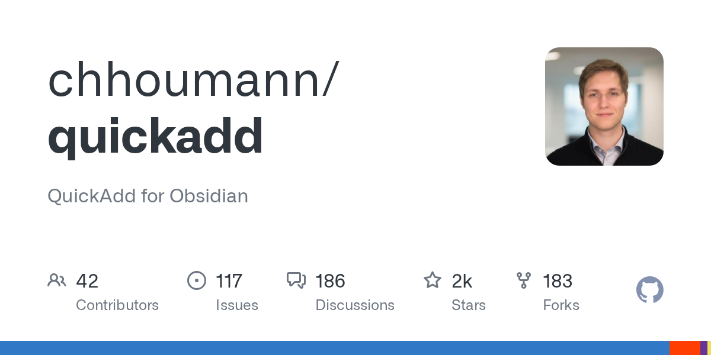
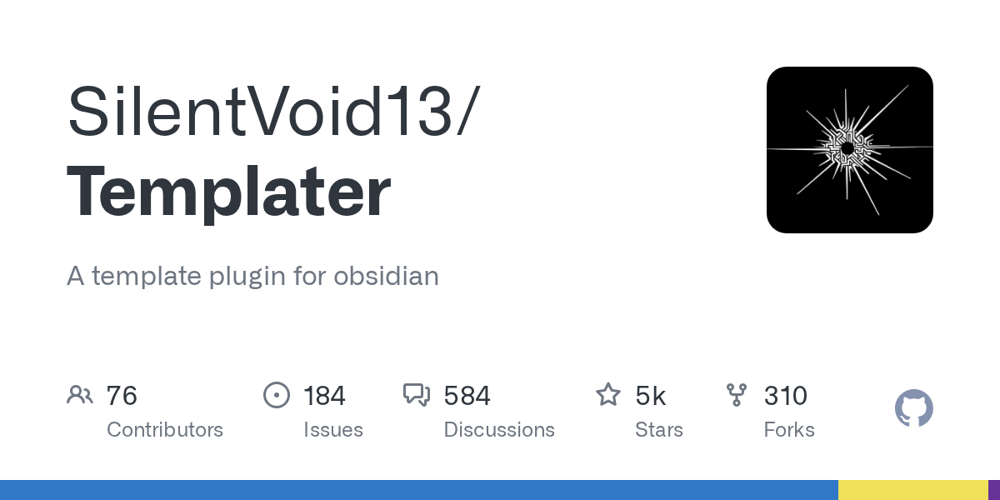
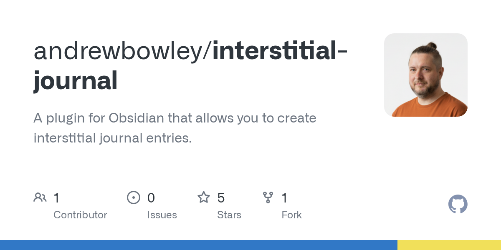
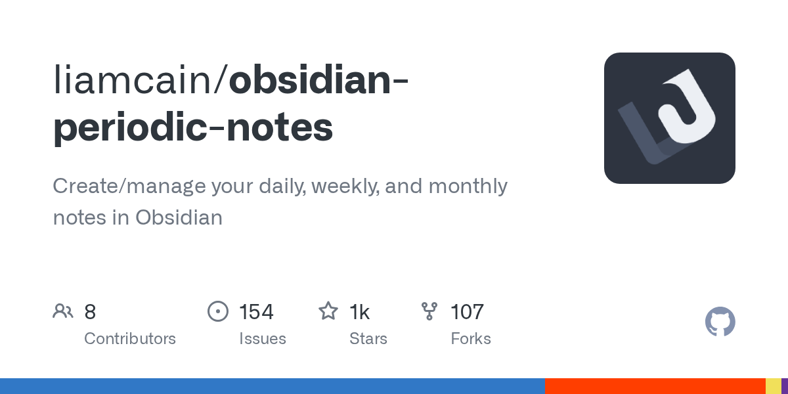

Four weeks to a daily-note habit that survives a bad week.
Build the habit before the system. One template, one hotkey, one mobile pathway, one Sunday pass — added in this order, never together.
The adoption chronogram
don't move to the next week until the current habit has survived a bad day →
Ctrl+Shift+N → that capture choice.↑ if you forget two days in a row, restart the current week. That's the signal the friction is still too high.
The five-line template
three buckets. no mood. no weather. no quotes.
## Captures
-
## Done
-
## Tomorrow
-
The three-layer habit stack
in this order. skip the order at your own risk.
[1]
## Notes heading in the daily note plus one hotkey that inserts the current time.[14] The practice that ties low-friction capture to Linking Your Thinking — fleeting entries surfacing later as evergreen material.[20]
- 14:32 finished compiler refactor; lifetime issue was upstream in the parser
Pick one capture pathway per device
⚠ a second mobile pathway doubles maintenance, halves your habitDesktop · ranked by friction
when Obsidian is already focused · 10 min
[7]
Alfred / Raycast / ULauncher · 30 min
[1]
The plugin pack — when to add each
add when you feel the lack, not pre-emptively

QuickAdd

Templater

Interstitial Journal
tp.date.now("HH:mm") avoids the dependency.
Periodic Notes
Antipatterns — what kills the habit before it sticks
The Sunday review ritual
Houmann (QuickAdd's author) runs exactly this; his version aggregates project mentions across the week into a single review.[16] Stripped to four steps for week-4 first-timers:
- Open each daily note for the past week. 15 minutes total — set a timer.
- For each
## Capturesline: promote to its own evergreen note, move to a project file, or delete. - Skim
## Donefor anything worth a retrospective tag. - Carry unfinished
## Tomorrowitems into next week's first daily note.
Pick this if you capture < 10 items/day. End-of-day inbox sweep[17] if you capture more.
Other chapters in the expedition ← back to parent
Linking & note structure
Backlinks, MOCs vs folders. One wikilink per note, then three MOCs.
Properties & tagging
YAML metadata so Bases and Dataview can query them.
Bases: live views
Convert reference folders into editable filterable views.
Low-friction capture & daily-note habits
Five-line template, one hotkey, one mobile pathway, one weekly pass.
Plugins & keyboard nav
The starter plugin pack + hotkey patterns for keyboard-first intermediates.